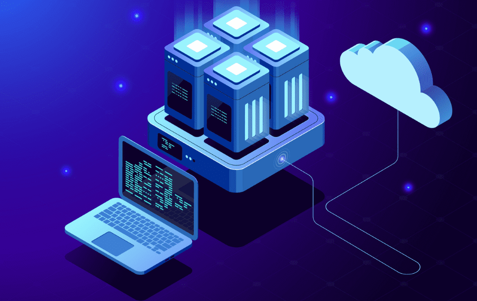
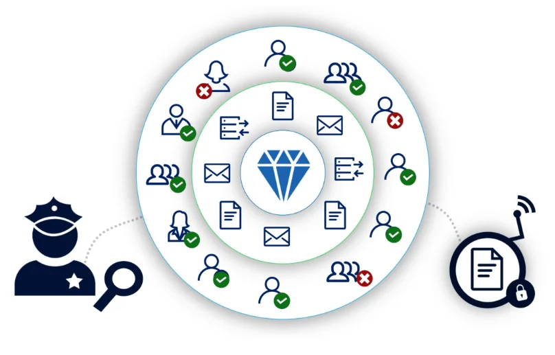
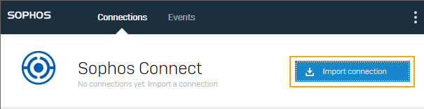

Gestión de Riesgos en Dataconsulting
Exploración detallada de la justificación de activos de alto riesgo.
- Josue Israel Amaya Torres
- Helbert Andres Condori Loayza
- Diego Andre Aranda Reyes
Fórmula de Cálculo de Riesgo
El riesgo se calcula como el producto del impacto y la probabilidad:
$$ \text{Riesgo} = \text{Impacto} \times \text{Probabilidad} $$
Servidor de Producción
El servidor de producción es crucial para la continuidad operativa. La redundancia y el balanceo de carga aseguran la disponibilidad, mientras que el monitoreo continuo previene vulnerabilidades. Estas medidas son esenciales para mantener la operatividad sin interrupciones (Rodríguez Castro, 2023).

Base de Datos de Producción
La base de datos contiene información crítica. El cifrado y la autenticación multifactor protegen contra accesos no autorizados. Las auditorías en tiempo real son claves para detectar y mitigar brechas de seguridad de manera efectiva (Atlantic Tech, 2023).
Información Restringida
La información restringida es altamente sensible y su protección es vital para evitar exposiciones. El cifrado y las herramientas de DLP son fundamentales para minimizar riesgos de filtración, reduciendo significativamente la probabilidad de exposición de datos (Red Seguridad, 2023).

Cuenta de Azure
La cuenta de Azure es esencial para la escalabilidad y flexibilidad en la nube. La implementación de autenticación multifactor y el uso de políticas de seguridad refuerzan la protección contra accesos no autorizados, reduciendo el riesgo de brechas (Microsoft Azure, 2023).

Accesos a Red Privada
Los accesos a la red privada son críticos para la seguridad interna. La implementación de VPNs seguras y la segmentación de red fortalecen la protección contra intrusiones, reduciendo el riesgo de accesos no autorizados (Network World, 2023).

Conclusión
La implementación de controles específicos ha permitido a Dataconsulting mitigar significativamente los riesgos asociados a sus activos más críticos, asegurando la continuidad y seguridad de las operaciones.
Referencias
Rodríguez Castro, J. (2023). Servidor de Producción: Gestión de riesgos y continuidad operativa. Universidad Católica Santo Toribio de Mogrovejo.
Atlantic Tech. (2023). Importancia de la seguridad en bases de datos.
Red Seguridad. (2023). Tendencias en seguridad y privacidad de datos.
Microsoft Azure. (2023). Introducción a la seguridad de Azure.
Network World. (2023). Importancia de la seguridad de red y accesos privados.